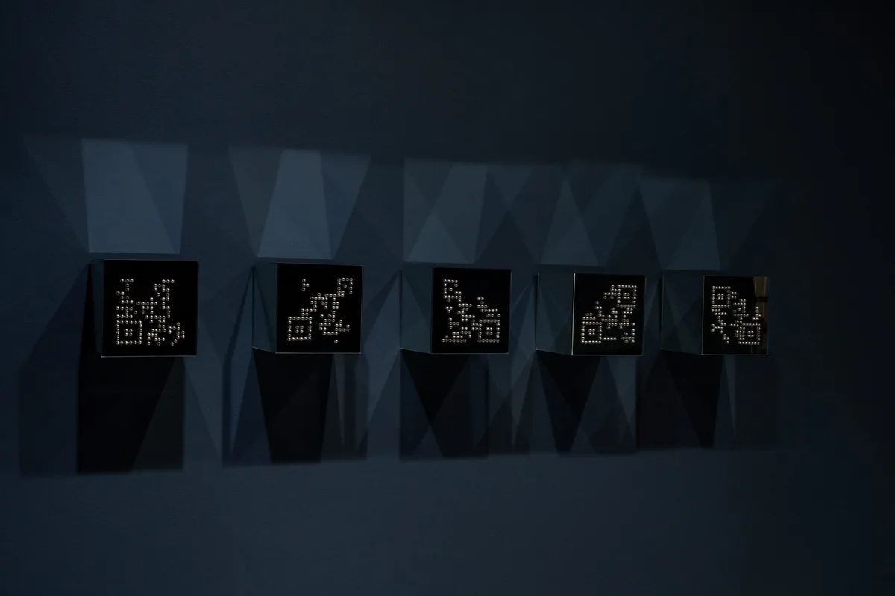

404: Self Not Found
Solo Exhibition
Pulp Society, Okhla
1 February 20 March 2026
The exhibition 404: Self Not Found investigates the dissonance between lived experience and its digital representation. Through mixed media works that layer hand-stitched interventions over printed data sequences and mechanical grids, the exhibition traces how the self is continuously fragmented, quantified, and reassembled by the systems it inhabits.
The stitched plus sign—borrowed from digital interfaces where it signifies addition, connection, and expansion—is reclaimed here as a gesture of repair. Each hand-stitched mark becomes an act of resistance against the speed and abstraction of digital logic, reintroducing the body, its labour, and its vulnerability into a landscape increasingly governed by automation.
The works oscillate between control and collapse, between the grid's promise of order and the organic ruptures that refuse containment. In this tension, the exhibition asks: what remains of the self when identity is reduced to data points? And can the slow, deliberate act of making offer a way back toward agency?

/algocover.webp)


/Break in Protocol-medium.webp)
/Code and Cortex-medium.webp)
/Confluence-medium.webp)
/Neurogrid-medium.webp)
/Self in Dissolution-medium.webp)
/Sequence of Fading-medium.webp)
/Signal Repair-medium.webp)
/Silent Friction-medium.webp)
/Threshold of Care-medium.webp)
/Vestige-medium.webp)